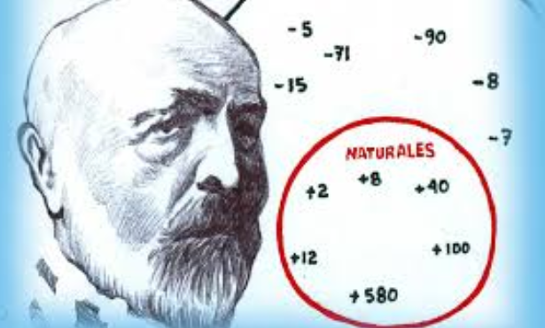

Teoría de Conjuntos: 1874
La teoría de conjuntos de Georg Cantor revolucionó las matemáticas al proporcionar un marco formal para el estudio de la infinidad y la estructura de los conjuntos. Introdujo conceptos fundamentales como la comparación de tamaños de conjuntos infinitos mediante el uso de cardinales y ordinales, demostrando que no todos los infinitos son iguales. Por ejemplo, mostró que el conjunto de los números reales es más grande que el de los números naturales, a pesar de que ambos son infinitos.
Volver a la página principal